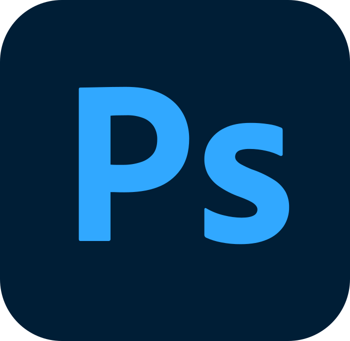

Diseño gráfico
¿Alguna ves te has preguntado qué es el diseño gráfico? En Esneca Business School lo percibimos como una disciplina creativa que va mucho más allá de la simple estética visual. En la era digital en la que vivimos, el diseño gráfico desempeña un papel crucial en diversos aspectos de nuestras vidas. Desde la publicidad y el marketing hasta la comunicación visual y la experiencia de usuario en el entorno digital, el diseño gráfico se ha convertido en una herramienta versátil que nos ayuda a transmitir ideas, emociones y mensajes de manera efectiva.
Adobe ilustrator
Adobe Illustrator CC es el programa líder del mercado para crear vectores e ilustraciones digitales, convirtiéndose en el estándar dentro del sector del diseño gráfico. Desarrollado por Adobe y formando parte de la suite en la nube Creative Cloud, Illustrator es la herramienta favorita de diseñadores, ilustradores y artistas de todo el mundo. Y es que su amplio abanico de herramientas y funciones profesionales han revolucionado la forma en la que creamos arte digital.
Adobe photoshop
Adobe Photoshop es un editor de fotografías desarrollado por Adobe Systems Incorporated. Usado principalmente para el retoque de fotografías y gráficos, su nombre en español significa "tienda de fotos". Es conocido mundialmente. Fue creado en 1986 por los hermanos Thomas Knoll y John Knoll, desde entonces se ha convertido en una marca de uso común, lo que lleva a su uso como un verbo ('photoshopear'), aunque Adobe desaconseja su uso.
Adobe InDesign
Adobe InDesign CC es un completo software de maquetación digital y diseño editorial. Éste pertenece a la suite en la nube Creative Cloud junto Adobe Photoshop CC, Adobe Premiere Pro o Adobe Illustrator, convirtiéndose en el programa de referencia de diseñadores, maquetadores y profesionales de la impresión de todo el mundo. InDesign proporciona todas las herramientas necesarias para la creación de pósteres o publicaciones de toda índole, desde libros y revistas hasta periódicos, folletos, trípticos o catálogos.